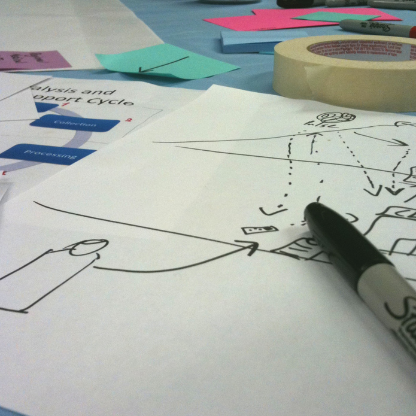

Tool Feedback Trainings
 Starting with a needs assessment, USABLE matches at-risk communities around the world with digital security tools addressing their needs. Through a training process, USABLE convenes the community with a trainer, a tool developer, and a usability expert.
Each Tool Feedback Training combines human-centered design work, traditional digital security training, and a focus on the mutually-agreed-upon security, privacy, or circumvention tool. These build community, communication, trust, skills, and provide insight for all participants - insights into real-world training and usage on tools for the developers, in-depth skills for the participants, and new ways to incorporate design and user exploration into trainings.
Each community will create not only suggested changes for the tool they focus on, but also create user personas to help other tool developers better understand the constraints they face.